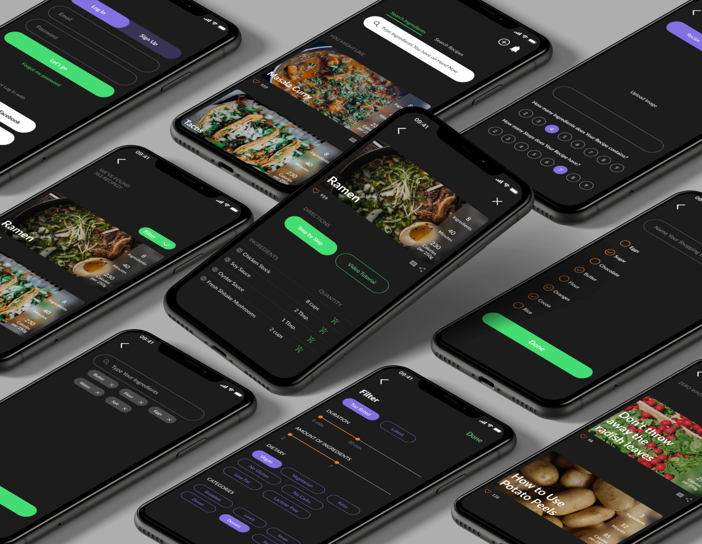

Afresh
Afresh is a responsive web app directed toward waste-conscious users to give them an easy access to customised, zero-waste recipes, tips and tool for tailoring their shopping lists more effectively.
About the project
During many conversations about cooking habits I find out that people are missing an app to cook more efficiently and organise their food supplies better. As we are facing the climate and economic crisis I decided to create a recipe app that could help us to implement zero-waste habits. Afresh is a responsive web app for people who care about their money, time and food waste. The core idea is to help users to find a recipe they need easily and quickly, so they can cook asap with less costs from what they currently have in the fridge without having to go to the grocery store.
The challenge
How to use what I already have?
People often find it hard to discover a recipe where they could use only the ingredients that they currently have in the fridge.
No time to search
They’re frustrated that they have to adjust the recipes by themselves when they have special dietary needs.
How I approached the challenge
The design process included:
- Conducting a Research
- Defining MVP
- Creating User Flows and User Personas
- Designing Low-fi Wireframes
- Styling the app
- Creating Mid&High-fid Wireframes
- Prototyping&Testing
The solution
- Creating "Search by Ingredient" tool
- Designing a feature allowing users to have an access to ingredient's alternatives
- Giving an option to transform any recipe into vegan, keto, low fat, gluten free etc.